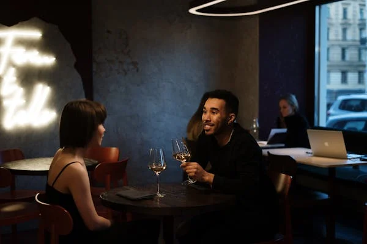
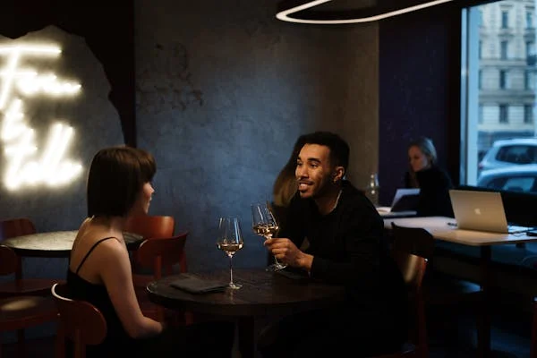
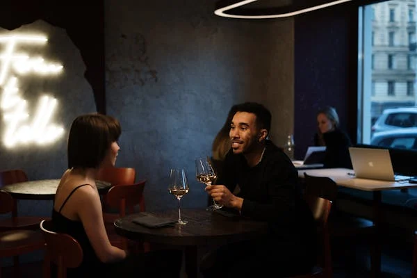

Treffe neue Leute beim Barhopping – ganz echt und persönlich.
 

Treffe neue Leute beim Barhopping – ganz echt und persönlich.

Bei Person-to-Person BarDates erlebst du ein ganz neues, aufregendes Konzept des Kennenlernens – ganz ohne Swipen, Filter oder Ablenkung. Beim BarHopping lernst du in entspannter Atmosphäre echte Menschen kennen, direkt von Angesicht zu Angesicht.
Unsere Teilnehmer berichten begeistert von einer lockeren, aber spannenden Stimmung, bei der Gespräche natürlich und spontan entstehen. Die Events sind professionell organisiert und bieten dir ein sicheres Umfeld, um neue Kontakte zu knüpfen.
📈 Die Resonanz spricht für sich:
Fast ausschließlich sehr gute Bewertungen, begeisterte Rückmeldungen – und viele, die sich nach dem Event für ein zweites Treffen verabreden. Es geht nicht nur um Flirts, sondern um ehrliche, echte Begegnungen.
🍸 Ob gemütlich an der Bar, bei einem lockeren Drink oder einem gemeinsamen Lachen – du wirst überrascht sein, wie schnell sich echtes Interesse und Verbindung entwickeln.